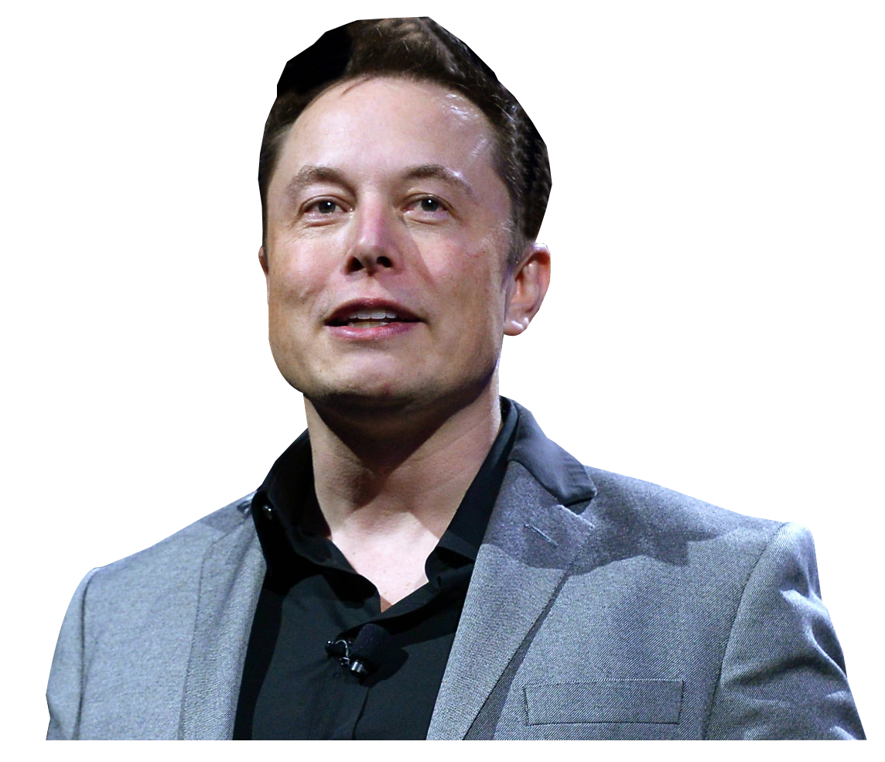

Elon Musk
Introduction
Welcome to the tribute page of Elon Musk. This page is dedicated to celebrating the life and legacy of Elon Musk, an entrepreneur, inventor, and visionary who has significantly impacted technology and space exploration.
Biography
Early Life
Elon Reeve Musk was born on June 28, 1971, in Pretoria, South Africa. From a young age, he displayed an extraordinary aptitude for technology and innovation. At the age of 12, he created and sold a simple game called Blastar.
Education
Musk moved to Canada at age 17 and later attended Queen’s University in Ontario. He transferred to the University of Pennsylvania, where he earned degrees in both economics and physics.
Career Beginnings
After leaving Stanford University's PhD program after two days, Musk entered the business world with his first startup, Zip2, a city guide software for newspapers, which was sold to Compaq for nearly $300 million in 1999.
Professional Achievements
PayPal
Elon co-founded X.com, an online payment company, which later became PayPal after a merger. PayPal was acquired by eBay in 2002 for $1.5 billion in stock.
SpaceX
In 2002, Musk founded Space Exploration Technologies Corp. (SpaceX) with the goal of reducing space transportation costs to enable the colonization of Mars. SpaceX made history in 2008 with the Falcon 1, the first privately developed liquid-fueled rocket to reach orbit. In 2012, SpaceX’s Dragon spacecraft became the first commercial spacecraft to dock with the International Space Station.
Tesla, Inc.
Musk joined Tesla Motors, Inc. (now Tesla, Inc.) in 2004, one year after it was founded, and became its largest shareholder and CEO. Tesla’s mission is to accelerate the world’s transition to sustainable energy. Tesla’s electric vehicles, from the Roadster to the Model S, Model X, Model 3, and Model Y, have set industry standards for performance and safety.
SolarCity
In 2006, Musk co-founded SolarCity, a solar energy services company. SolarCity was later acquired by Tesla and became Tesla Energy.
Other Ventures
Musk has also founded or co-founded several other companies, including Neuralink (developing brain-machine interfaces), The Boring Company (focused on tunnel construction and infrastructure), and OpenAI (promoting and developing friendly AI).
Photos and Videos
Solar System
.jpeg)
SpaceX Lanch
Tesla
Awards and Honors
- Time 100: Musk has been listed in Time magazine's list of the 100 most influential people multiple times.
- Royal Aeronautical Society Gold Medal: For his contributions to the field of aerospace.
- Order of the Direkgunabhorn: Awarded by the King of Thailand for his efforts in the Tham Luang cave rescue.
Favorite Quotes by Elon Musk
"When something is important enough, you do it even if the odds are not in your favor."
"The first step is to establish that something is possible; then probability will occur."
"Persistence is very important. You should not give up unless you are forced to give up."
Guestbook
Feel free to share your memories and tributes below.
John Smith: "Elon Musk's work with SpaceX has rekindled humanity’s interest in space exploration. Thank you, Elon!"
Anna Lee: "Tesla’s electric cars have changed the automotive industry forever. Elon Musk’s vision for the future is truly inspiring."